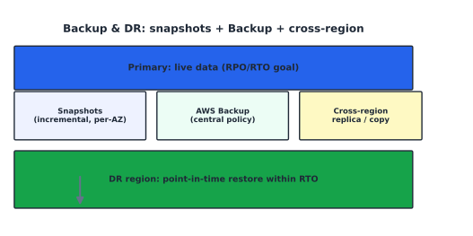

Backup, Disaster Recovery, and Business Continuity#
Learning Objectives#
Define Business Continuity and Disaster Recovery.
Apply Recovery Point Objective (RPO) and Recovery Time Objective (RTO).
Compare Backup Strategies (full/incremental/differential).
Administer AWS Backup, Snapshots, and Cross-Region Replication.
Business Continuity & Disaster Recovery#
Business Continuity (BC) = keep the business running during/after an event.
Disaster Recovery (DR) = restore IT after a catastrophic outage.
DR strategy |
Approach |
Typical RTO/RPO |
|---|---|---|
Backup & restore |
restore from backup |
hours–days |
Warm standby |
reduced capacity on standby |
minutes–hours |
Pilot light |
minimal core in DR region |
hours |
Hot standby / active-passive |
full capacity, ready |
minutes |
Active-active |
serve from multiple regions |
seconds |
RPO and RTO — the two numbers you negotiate#
Disaster at time T → last good recovery point (RPO behind T) → up to RTO to restore
RPO (Recovery Point Objective) = max acceptable data loss (how far back you restore).
RPO near zero = continuous replication (expensive); RPO of hours = periodic backups.
RTO (Recovery Time Objective) = max acceptable downtime (restore time).
RTO near zero = hot standby (always running); RTO of hours = rebuild from backup.
Rule: set RPO/RTO from business value, not from what’s technically convenient.
{kind=link}

Fig. 19 Backups: snapshots + AWS Backup policies + cross-region replicas converge on the DR region for restore.#
Backup Strategies#
Strategy |
How |
Pro/Con |
|---|---|---|
Full |
copy all data |
simple; storage-heavy |
Incremental |
only what changed since last |
small; chain-restore |
Differential |
changed since last full |
medium; restore = full + latest diff |
3-2-1 rule: 3 copies, 2 media types, 1 off-site/off-region.
AWS Backup#
Centralized backup orchestration for EBS, S3, RDS, Aurora, DynamoDB, EFS, FSx, Storage Gateway.
Concept |
Notes |
|---|---|
Backup plan |
schedule + lifecycle (move to cold / expire / copy cross-region) |
Backup vault |
encrypted container w/ access policy |
Recovery point |
each backup is a point; immutable options available |
Selections |
choose which resources (tags) to back up |
Lifecycle: warm → cold storage (after N days) → expire (after N days), optionally copy to another Region.
Snapshots#
A point-in-time, incremental copy of a volume/DB.
Service |
Snapshot traits |
|---|---|
EBS |
incremental + compressed; first is full; same-AZ; restore = new volume |
RDS |
automated (PITR via transaction logs) + manual; full/incremental |
Deleting the resource |
does not delete its snapshots |
Fast Snapshot Restore pre-warms a restored volume to full IOPS instantly. Warning: snapshots are regional by default — enable cross-region copying for true DR.
Cross-Region Replication (CRR)#
Service |
CRR mechanism |
|---|---|
S3 |
Cross-Region Replication (versioned buckets) |
RDS / Aurora |
cross-region read replica |
EBS |
snapshot copy (manual or via Backup cross-region plan) |
DynamoDB |
global table (multi-master) or on-demand backup copy |
Tip
CRR solves geo-diversity; combine with Route 53 failover (health checks + ALIAS) for automatic active→standby promotion within RTO/RPO.
Checkpoint#
Q1. A business requires RPO=5 min, RTO=1 hour. What DR style fits, and which AWS feature?
Answer. Warm standby / hot standby: keep a reduced/standby copy refreshed every few minutes (e.g., RDS cross-region read replica + ASG in DR region) and promote within 1 hour.
Q2. Which backup strategy gives the smallest storage footprint, and the most complex restore?
Answer. Incremental (stores only changes) — but restore needs the last full plus the whole incremental chain, so it’s the most complex to recover.
Q3. True or false — deleting an RDS instance deletes its manual snapshots.
Answer. False: deleting an instance deletes automated snapshots, but manual snapshots persist until you delete them.
Q4. If you replicate an S3 bucket cross-region, what two things are required first?
Answer. The source bucket must have versioning enabled, and a replication configuration must grant S3 permission to read source and write destination.
Q5. How does Fast Snapshot Restore change the RTO equation for EBS?
Answer. It restores an EBS volume to peak IOPS immediately, removing the slow “warm-up” period — directly shrinking the recovery part of RTO.
Sources#
The concepts in this chapter are summarized from the following authoritative sources:
AWS Backup Developer Guide: https://docs.aws.amazon.com/backup/latest/devguide/
Amazon S3 cross-region replication: https://docs.aws.amazon.com/AmazonS3/latest/userguide/replication.html
RDS point-in-time recovery: https://docs.aws.amazon.com/AmazonRDS/latest/UserGuide/USER_WorkingWithAutomatedBackup.html